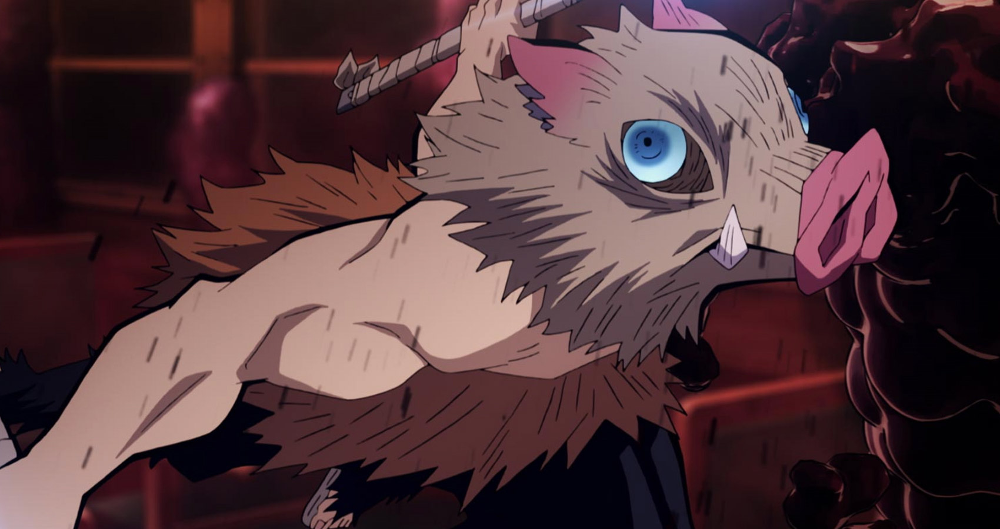

INOSUKE HASHIBARA
VA: YOSHITSUGU MATSUOKA/BRYCE PAPENBROOK

A swordsman in the Demon Slayer Corps and one of Tanjiro's peers, he's combative and tends to rush headlong into battle. Using Beast Breathing, he wields two chipped Nichirin Swords with flair.